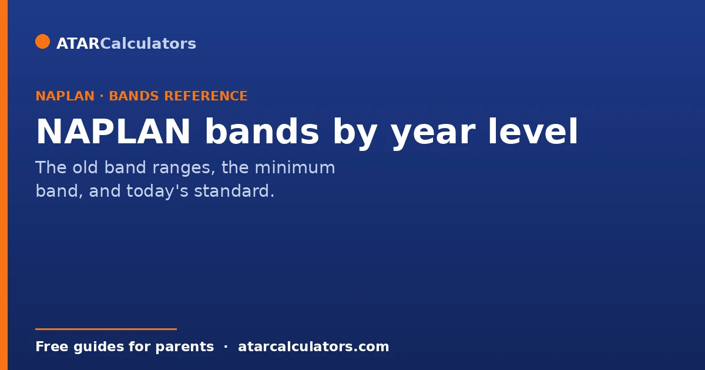
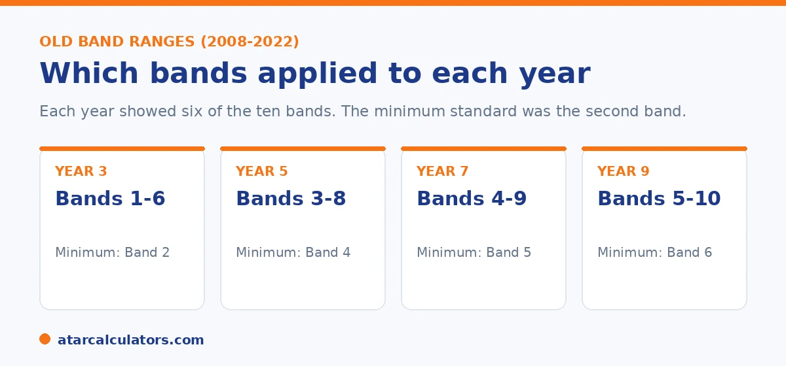

Here is the short version. From 2008 to 2022, NAPLAN reported results on a scale of 10 bands. And each year level showed a different set of six bands. Year 3 used Bands 1 to 6, Year 5 used Bands 3 to 8, Year 7 used Bands 4 to 9, and Year 9 used Bands 5 to 10. The minimum standard was the second band shown for each year. Since 2023, bands are gone, replaced by four proficiency levels, with Strong as the expected level. This guide is your reference for both systems.
If you have an older NAPLAN report, you will see a band. And you may wonder what band your child was meant to reach for their year. This guide lays it out clearly.
Bands ran from 2008 to 2022. Since 2023, NAPLAN uses four levels instead. Both are covered below. To check a recent score, use our NAPLAN band calculator or the NAPLAN score calculator.
Key takeaways
- NAPLAN used 10 bands from 2008 to 2022. Band 1 was lowest, Band 10 highest.
- Each year showed six bands: Year 3 (1-6), Year 5 (3-8), Year 7 (4-9), Year 9 (5-10).
- The minimum standard was the second band shown for each year.
- A band was a range of scores, not a single mark.
- Since 2023, bands are replaced by four levels, with Strong as the expected level.
- Old band results cannot be compared to results from 2023 onwards.
What changed in 2023
For years, NAPLAN reported results on a scale of 10 bands. In 2023, that scale was retired and replaced by four proficiency levels: Exceeding, Strong, Developing, and Needs additional support.

Because the systems are different, scores from before 2023 cannot be compared to scores from 2023 onwards. If your report shows a band, it is from 2022 or earlier. If it shows a level, it is from 2023 or later.
The band ranges by year level
The 10 bands sat on one common scale across all years. Each year level only showed the six bands that were relevant for that age. Here is the full reference.
| Year level | Bands shown | Minimum standard (old system) |
|---|---|---|
| Year 3 | Bands 1 to 6 | Band 2 |
| Year 5 | Bands 3 to 8 | Band 4 |
| Year 7 | Bands 4 to 9 | Band 5 |
| Year 9 | Bands 5 to 10 | Band 6 |
From 2008 to 2022. Since 2023, NAPLAN reports four proficiency levels instead of bands.
So the same band meant different things at different years. The old minimum standard and the new levels are not the same bar, either. The 2023 "Strong" standard was set higher than the old minimum standard. So an old minimum-standard result does not equate to "Strong" today. Band 6 was the top band for Year 3, but only the minimum standard for Year 9. That is why a band number on its own was easy to misread.
Why each year showed different bands
NAPLAN measures skills that grow more complex as children get older. A common scale runs through all year levels, so the test can track growth from Year 3 to Year 9 on one continuous measure.
Because older students are expected to know more, their results sit higher on the scale. So each year level was shown against the part of the scale that fit its age. Year 3 used the lower bands, and Year 9 used the higher ones.
Have an older report with a band and want today's equivalent?
Open the NAPLAN band calculator →What the minimum standard was
Each year also had a National Minimum Standard. This was the second band shown for that year. For Year 3 it was Band 2, for Year 5 Band 4, for Year 7 Band 5, and for Year 9 Band 6.
A child at or above the minimum standard was seen as having the basic expected skills. A child below it was flagged for support. The minimum standard was dropped in 2023, because it set the bar low and could miss children who still needed help. You can read more in our guide on minimum standard versus proficient.
The new standard: Strong at every year
Today the question is simpler. For every year level, Strong is the expected standard. Reaching Strong means your child is at or just above what is expected for their year, whichever year that is.
The bar still rises each year. The score needed to reach Strong in Year 9 is much higher than in Year 3. So the level stays the same word, while the standard behind it grows. For what counts as a good result, see our guide on a good NAPLAN score by year level.
Reading an old or new report
If you are holding an older report, find the band, then check whether it was at or above the minimum standard for that year using the table above. If you are holding a recent report, look at the level instead, and aim for Strong.
For a full walk through of a current report, see our guide on how to read the NAPLAN report.
A little extra guidance makes reading either kind of report straightforward. This is because the two work differently. With an older, band-based report, the band number alone is not enough. This is because the same band meant different things at different year levels. The useful step is to find the band, then check it against the minimum standard for that specific year. So you know whether the child was at, above or below where they were expected to be. Remember that the old bands described a broad distribution rather than a clear expected point. So read them as a position on a range for that year, not as a plain statement of "meeting the standard". With a recent, level-based report the job is simpler by design. The proficiency level tells you directly whether your child is meeting the year's expectations, with Strong as the expected standard, Exceeding above it, and Developing and Needs additional support below. Alongside the level, the scaled score is worth noting. This is because tracking it across successive tests shows growth even when the level stays the same, and because the score needed to reach a given level rises with each year. The key habit for both formats is to read a result in the context of its year level, rather than in isolation. Wherever possible, rely on the current level system for judging where a child stands. This is because it was built specifically to make that judgement clear in a way the old bands never did.
How bands rose across the years
Under the old system, the bands you expected to see rose with each year level. The same ten-band scale was used throughout, but a Year 9 student was expected to reach higher bands than a Year 3 student.
So a Band 6 was an excellent Year 3 result and a middling Year 9 one. The band alone never told the whole story without knowing the year level attached to it.
The new levels at each year
Now each year level receives the same four levels, from Needs additional support to Exceeding. What changes is the standard behind them. Strong at Year 9 requires more than Strong at Year 3.
This keeps the wording simple while still matching each year's expectations. So a Strong result always means your child is meeting the challenging standard set for their year.
Why the online test supported the change
Moving online brought adaptive testing, where questions adjust to each student's answers. This measures ability more precisely than a single fixed paper.
More precise measurement made it possible to describe results with clearer proficiency levels rather than a long band scale. So the change was not just new wording. It reflected a better underlying test, and for families the practical effect is a result that is easier to read and still accurate for the year.
Tracking growth across the years now
Even with the new levels, you can still track growth across the years. Because scaled scores sit on one scale from Year 3 to Year 9, you can line up your child's scores over time.
So compare the scaled scores from each NAPLAN, not just the levels. Rising scores show real progress, even when the proficiency level stays the same from one year to the next.
Common questions
What NAPLAN band is expected for each year level?
Until 2022, the minimum standard was Band 2 for Year 3, Band 4 for Year 5, Band 5 for Year 7, and Band 6 for Year 9. Since 2023, the expected level is Strong for every year.
What bands did Year 3 use?
Year 3 reports showed Bands 1 to 6. The minimum standard was Band 2. Band 6 was the highest band shown for Year 3.
What bands did Year 9 use?
Year 9 reports showed Bands 5 to 10. The minimum standard was Band 6. Band 10 was the highest band shown for Year 9.
What replaced year-level bands?
Four proficiency levels replaced the bands in 2023: Exceeding, Strong, Developing, and Needs additional support. Strong is the expected level for every year.
What is expected at Year 7?
Until 2022, Year 7 used Bands 4 to 9, with Band 5 as the minimum standard. Since 2023, the expected level for Year 7 is Strong.
Was a band a single score?
No. A band was a range of scores, not a single mark. Your child's report showed where their result fell within the relevant bands.
Can I compare an old band to a new level?
No. There is no exact swap, and scores from before 2023 cannot be compared to results from 2023 onwards. Use the level on a current report to judge a recent result.
Turn an old band into today's level
Enter a NAPLAN result and year level to see the indicative level. Free, and no signup.
Open the NAPLAN band calculator →Related guides
This guide is general information for parents, not formal advice. NAPLAN reporting can change, so always check the official details on the National Assessment Program (NAP) site, and talk to your child's teacher. Reviewed by the ATARCalculators Editorial Team.